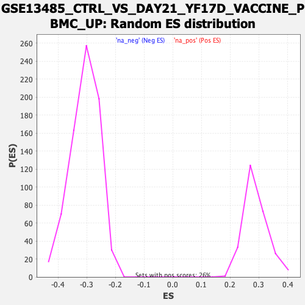

| | | Dataset | DE_genes |
| Phenotype | NoPhenotypeAvailable |
| Upregulated in class | na_neg |
| GeneSet | GSE13485_CTRL_VS_DAY21_YF17D_VACCINE_PBMC_UP |
| Enrichment Score (ES) | -0.5422739 |
| Normalized Enrichment Score (NES) | -1.7651931 |
| Nominal p-value | 0.0 |
| FDR q-value | 0.0 |
| FWER p-Value | 0.0 |
Table: GSEA Results Summary
 Fig 1: Enrichment plot: GSE13485_CTRL_VS_DAY21_YF17D_VACCINE_PBMC_UP
Fig 1: Enrichment plot: GSE13485_CTRL_VS_DAY21_YF17D_VACCINE_PBMC_UP
Profile of the Running ES Score & Positions of GeneSet Members on the Rank Ordered List
| PROBE | GENE SYMBOL | GENE_TITLE | RANK IN GENE LIST | RANK METRIC SCORE | RUNNING ES | CORE ENRICHMENT | | 1 | DAZAP2 | | | 640 | 1.387 | -0.0331 | No |
| 2 | GTPBP1 | | | 691 | 1.293 | -0.0281 | No |
| 3 | ITGAX | | | 709 | 1.262 | -0.0212 | No |
| 4 | NFIL3 | | | 745 | 1.204 | -0.0159 | No |
| 5 | SLC25A28 | | | 821 | 1.082 | -0.0139 | No |
| 6 | EFHD2 | | | 873 | 1.004 | -0.0109 | No |
| 7 | ARF3 | | | 974 | 0.891 | -0.0118 | No |
| 8 | NECAP1 | | | 1090 | 0.763 | -0.0145 | No |
| 9 | RFPL3S | | | 1233 | 0.655 | -0.0196 | No |
| 10 | PHF21A | | | 1401 | 0.566 | -0.0269 | No |
| 11 | DCLRE1C | | | 1518 | 0.511 | -0.0313 | No |
| 12 | FMNL1 | | | 1601 | 0.471 | -0.0336 | No |
| 13 | POLR3F | | | 1626 | 0.463 | -0.0323 | No |
| 14 | FAM160B1 | | | 1865 | 0.364 | -0.0455 | No |
| 15 | TRIM8 | | | 2002 | 0.326 | -0.0523 | No |
| 16 | ABHD13 | | | 2018 | 0.320 | -0.0513 | No |
| 17 | ZBTB26 | | | 2019 | 0.320 | -0.0493 | No |
| 18 | PGS1 | | | 2024 | 0.319 | -0.0475 | No |
| 19 | C2orf49 | | | 2135 | 0.285 | -0.0529 | No |
| 20 | CEBPG | | | 2139 | 0.285 | -0.0513 | No |
| 21 | SLC36A4 | | | 2400 | 0.227 | -0.0668 | No |
| 22 | CKAP4 | | | 2412 | 0.224 | -0.0661 | No |
| 23 | NUDT15 | | | 2439 | 0.218 | -0.0665 | No |
| 24 | SNN | | | 2452 | 0.216 | -0.0659 | No |
| 25 | MNT | | | 2697 | 0.176 | -0.0807 | No |
| 26 | WBP2 | | | 2906 | 0.149 | -0.0934 | No |
| 27 | PPM1A | | | 3006 | 0.139 | -0.0990 | No |
| 28 | NPEPL1 | | | 3350 | 0.110 | -0.1207 | No |
| 29 | RNF10 | | | 3446 | 0.103 | -0.1263 | No |
| 30 | CTSK | | | 3927 | 0.075 | -0.1572 | No |
| 31 | MAP3K2 | | | 3966 | 0.072 | -0.1592 | No |
| 32 | ZNF746 | | | 3975 | 0.071 | -0.1593 | No |
| 33 | RAD23B | | | 4017 | 0.069 | -0.1615 | No |
| 34 | HYMAI | | | 4248 | 0.056 | -0.1762 | No |
| 35 | UBAP2L | | | 4255 | 0.055 | -0.1763 | No |
| 36 | USP42 | | | 4328 | 0.051 | -0.1806 | No |
| 37 | ABCA13 | | | 4545 | 0.039 | -0.1945 | No |
| 38 | ADO | | | 4581 | 0.037 | -0.1966 | No |
| 39 | EBLN2 | | | 4818 | 0.025 | -0.2118 | No |
| 40 | CALU | | | 4820 | 0.025 | -0.2118 | No |
| 41 | SAT2 | | | 4846 | 0.024 | -0.2132 | No |
| 42 | PIK3R5 | | | 4940 | 0.020 | -0.2192 | No |
| 43 | GZF1 | | | 5107 | 0.010 | -0.2300 | No |
| 44 | GRB2 | | | 5659 | -0.018 | -0.2659 | No |
| 45 | RAP2B | | | 5681 | -0.019 | -0.2672 | No |
| 46 | B3GNT7 | | | 5856 | -0.030 | -0.2783 | No |
| 47 | MAP6D1 | | | 6255 | -0.056 | -0.3040 | No |
| 48 | RILPL2 | | | 6277 | -0.058 | -0.3050 | No |
| 49 | RELA | | | 6467 | -0.071 | -0.3169 | No |
| 50 | MYO19 | | | 6707 | -0.089 | -0.3320 | No |
| 51 | XPO7 | | | 6864 | -0.100 | -0.3416 | No |
| 52 | CUX1 | | | 6910 | -0.103 | -0.3439 | No |
| 53 | ATP2A2 | | | 7041 | -0.114 | -0.3516 | No |
| 54 | AKT1S1 | | | 7073 | -0.116 | -0.3529 | No |
| 55 | GNE | | | 7103 | -0.119 | -0.3541 | No |
| 56 | GPATCH2L | | | 7188 | -0.126 | -0.3588 | No |
| 57 | CFL2 | | | 7343 | -0.140 | -0.3680 | No |
| 58 | FCHSD2 | | | 7379 | -0.143 | -0.3693 | No |
| 59 | BRAP | | | 7422 | -0.147 | -0.3712 | No |
| 60 | GLTP | | | 7719 | -0.172 | -0.3894 | No |
| 61 | MTMR3 | | | 7733 | -0.173 | -0.3892 | No |
| 62 | PITPNA | | | 7818 | -0.181 | -0.3935 | No |
| 63 | DDX19B | | | 7838 | -0.183 | -0.3936 | No |
| 64 | CTNNB1 | | | 7899 | -0.189 | -0.3963 | No |
| 65 | DENND1A | | | 7949 | -0.193 | -0.3983 | No |
| 66 | GRPEL1 | | | 8061 | -0.205 | -0.4043 | No |
| 67 | NBEAL2 | | | 8315 | -0.231 | -0.4194 | No |
| 68 | SAR1A | | | 8644 | -0.267 | -0.4391 | No |
| 69 | PAFAH1B2 | | | 8780 | -0.283 | -0.4461 | No |
| 70 | ARAF | | | 8839 | -0.291 | -0.4481 | No |
| 71 | PWWP2B | | | 8898 | -0.297 | -0.4500 | No |
| 72 | LPP | | | 9148 | -0.329 | -0.4642 | No |
| 73 | USP3 | | | 9333 | -0.350 | -0.4740 | No |
| 74 | SH2B3 | | | 9356 | -0.353 | -0.4732 | No |
| 75 | HMGXB4 | | | 9362 | -0.354 | -0.4713 | No |
| 76 | PURB | | | 9368 | -0.355 | -0.4694 | No |
| 77 | SUPT5H | | | 9414 | -0.360 | -0.4700 | No |
| 78 | ZNF8 | | | 9473 | -0.369 | -0.4715 | No |
| 79 | RUNX3 | | | 9497 | -0.373 | -0.4706 | No |
| 80 | SLC30A1 | | | 9526 | -0.377 | -0.4700 | No |
| 81 | ZNF787 | | | 9547 | -0.380 | -0.4689 | No |
| 82 | SPATA2 | | | 9585 | -0.386 | -0.4689 | No |
| 83 | ZDHHC3 | | | 9596 | -0.387 | -0.4671 | No |
| 84 | CORO7 | | | 10111 | -0.463 | -0.4978 | No |
| 85 | WASL | | | 10223 | -0.480 | -0.5020 | No |
| 86 | IRAK1 | | | 10271 | -0.487 | -0.5020 | No |
| 87 | AKAP8 | | | 10413 | -0.507 | -0.5080 | No |
| 88 | MIDN | | | 10427 | -0.509 | -0.5056 | No |
| 89 | ATPAF2 | | | 10501 | -0.520 | -0.5071 | No |
| 90 | WBP11 | | | 10524 | -0.524 | -0.5052 | No |
| 91 | CACUL1 | | | 10663 | -0.547 | -0.5108 | No |
| 92 | USP24 | | | 10737 | -0.559 | -0.5120 | No |
| 93 | FBXL12 | | | 10767 | -0.563 | -0.5103 | No |
| 94 | MAPKAP1 | | | 10909 | -0.583 | -0.5158 | No |
| 95 | ZNF317 | | | 10911 | -0.584 | -0.5122 | No |
| 96 | TNFRSF1B | | | 11113 | -0.617 | -0.5214 | No |
| 97 | PPIL4 | | | 11284 | -0.653 | -0.5284 | No |
| 98 | CAPN1 | | | 11357 | -0.669 | -0.5289 | No |
| 99 | UBAC1 | | | 11416 | -0.682 | -0.5283 | No |
| 100 | KDM5B | | | 11507 | -0.700 | -0.5298 | No |
| 101 | SQSTM1 | | | 11671 | -0.736 | -0.5358 | No |
| 102 | NXF1 | | | 11680 | -0.739 | -0.5316 | No |
| 103 | HBEGF | | | 11688 | -0.740 | -0.5274 | No |
| 104 | NR4A2 | | | 11743 | -0.749 | -0.5261 | No |
| 105 | EDEM1 | | | 11828 | -0.767 | -0.5268 | No |
| 106 | NCOR2 | | | 12066 | -0.817 | -0.5371 | Yes |
| 107 | XPNPEP1 | | | 12102 | -0.830 | -0.5341 | Yes |
| 108 | MRGBP | | | 12154 | -0.843 | -0.5321 | Yes |
| 109 | CRK | | | 12164 | -0.845 | -0.5273 | Yes |
| 110 | FASTKD5 | | | 12256 | -0.866 | -0.5278 | Yes |
| 111 | TMEM184B | | | 12270 | -0.869 | -0.5231 | Yes |
| 112 | DIS3 | | | 12370 | -0.893 | -0.5239 | Yes |
| 113 | KLF11 | | | 12376 | -0.895 | -0.5186 | Yes |
| 114 | ATXN1L | | | 12430 | -0.912 | -0.5163 | Yes |
| 115 | UHRF1BP1 | | | 12484 | -0.924 | -0.5139 | Yes |
| 116 | IBA57 | | | 12527 | -0.935 | -0.5107 | Yes |
| 117 | ZBTB2 | | | 12543 | -0.939 | -0.5057 | Yes |
| 118 | KLHDC2 | | | 12576 | -0.946 | -0.5018 | Yes |
| 119 | METRNL | | | 12760 | -1.000 | -0.5074 | Yes |
| 120 | ATG14 | | | 12848 | -1.028 | -0.5066 | Yes |
| 121 | NAPG | | | 12854 | -1.029 | -0.5004 | Yes |
| 122 | SLC16A5 | | | 12885 | -1.040 | -0.4957 | Yes |
| 123 | DNAJC3 | | | 12886 | -1.040 | -0.4891 | Yes |
| 124 | ZBTB39 | | | 12963 | -1.065 | -0.4873 | Yes |
| 125 | SDE2 | | | 13023 | -1.084 | -0.4843 | Yes |
| 126 | PPP1R12B | | | 13062 | -1.094 | -0.4799 | Yes |
| 127 | C6orf136 | | | 13083 | -1.101 | -0.4742 | Yes |
| 128 | ARID5A | | | 13090 | -1.103 | -0.4676 | Yes |
| 129 | RNASEH1 | | | 13113 | -1.109 | -0.4620 | Yes |
| 130 | ZBED4 | | | 13170 | -1.126 | -0.4585 | Yes |
| 131 | MAP7D1 | | | 13187 | -1.132 | -0.4524 | Yes |
| 132 | DHX35 | | | 13212 | -1.143 | -0.4467 | Yes |
| 133 | PIGS | | | 13237 | -1.150 | -0.4410 | Yes |
| 134 | RNF139 | | | 13243 | -1.151 | -0.4340 | Yes |
| 135 | VPS33B | | | 13290 | -1.170 | -0.4296 | Yes |
| 136 | ACVR1B | | | 13343 | -1.189 | -0.4254 | Yes |
| 137 | NEK3 | | | 13409 | -1.216 | -0.4220 | Yes |
| 138 | PLA2G15 | | | 13457 | -1.236 | -0.4172 | Yes |
| 139 | HGS | | | 13512 | -1.257 | -0.4127 | Yes |
| 140 | ZNF766 | | | 13513 | -1.258 | -0.4048 | Yes |
| 141 | ABL1 | | | 13515 | -1.259 | -0.3968 | Yes |
| 142 | PHLPP1 | | | 13612 | -1.296 | -0.3949 | Yes |
| 143 | SERTAD2 | | | 13639 | -1.306 | -0.3883 | Yes |
| 144 | SIK1 | | | 13666 | -1.317 | -0.3816 | Yes |
| 145 | CD83 | | | 13751 | -1.361 | -0.3785 | Yes |
| 146 | GOSR2 | | | 13813 | -1.385 | -0.3737 | Yes |
| 147 | KIAA0556 | | | 13826 | -1.389 | -0.3657 | Yes |
| 148 | ZNF805 | | | 13853 | -1.401 | -0.3585 | Yes |
| 149 | ANKS1A | | | 13874 | -1.411 | -0.3508 | Yes |
| 150 | LRRC57 | | | 13890 | -1.419 | -0.3428 | Yes |
| 151 | ATG9A | | | 13929 | -1.436 | -0.3362 | Yes |
| 152 | CRTC2 | | | 13982 | -1.460 | -0.3303 | Yes |
| 153 | SLC26A6 | | | 14099 | -1.533 | -0.3282 | Yes |
| 154 | TRIM11 | | | 14101 | -1.535 | -0.3185 | Yes |
| 155 | CCDC69 | | | 14102 | -1.535 | -0.3088 | Yes |
| 156 | ULK1 | | | 14112 | -1.541 | -0.2996 | Yes |
| 157 | RBM33 | | | 14143 | -1.562 | -0.2916 | Yes |
| 158 | STON1 | | | 14157 | -1.575 | -0.2825 | Yes |
| 159 | RCC2 | | | 14171 | -1.584 | -0.2733 | Yes |
| 160 | DSTYK | | | 14217 | -1.610 | -0.2660 | Yes |
| 161 | USP30 | | | 14296 | -1.657 | -0.2606 | Yes |
| 162 | ZBTB34 | | | 14336 | -1.679 | -0.2525 | Yes |
| 163 | VPS18 | | | 14376 | -1.699 | -0.2443 | Yes |
| 164 | VPS11 | | | 14483 | -1.776 | -0.2399 | Yes |
| 165 | RNF168 | | | 14514 | -1.799 | -0.2305 | Yes |
| 166 | PXN | | | 14569 | -1.844 | -0.2223 | Yes |
| 167 | FOXK2 | | | 14570 | -1.845 | -0.2106 | Yes |
| 168 | MEF2D | | | 14625 | -1.896 | -0.2021 | Yes |
| 169 | USP22 | | | 14764 | -2.028 | -0.1983 | Yes |
| 170 | ZBTB10 | | | 14792 | -2.058 | -0.1870 | Yes |
| 171 | ZNF3 | | | 14794 | -2.059 | -0.1740 | Yes |
| 172 | SMAD7 | | | 15019 | -2.330 | -0.1738 | Yes |
| 173 | ZDHHC7 | | | 15042 | -2.369 | -0.1602 | Yes |
| 174 | PPP3R1 | | | 15228 | -2.725 | -0.1551 | Yes |
| 175 | TACC1 | | | 15297 | -2.924 | -0.1410 | Yes |
| 176 | MAPKAPK2 | | | 15312 | -2.988 | -0.1229 | Yes |
| 177 | MADD | | | 15324 | -3.047 | -0.1043 | Yes |
| 178 | VPS37B | | | 15352 | -3.184 | -0.0859 | Yes |
| 179 | MAFG | | | 15407 | -3.631 | -0.0663 | Yes |
| 180 | PPP1R14B | | | 15410 | -3.677 | -0.0432 | Yes |
| 181 | KCTD20 | | | 15411 | -3.686 | -0.0198 | Yes |
| 182 | BAP1 | | | 15413 | -3.723 | 0.0038 | Yes |
Table: GSEA details [plain text format]

Fig 2: GSE13485_CTRL_VS_DAY21_YF17D_VACCINE_PBMC_UP: Random ES distribution
Gene set null distribution of ES for GSE13485_CTRL_VS_DAY21_YF17D_VACCINE_PBMC_UP